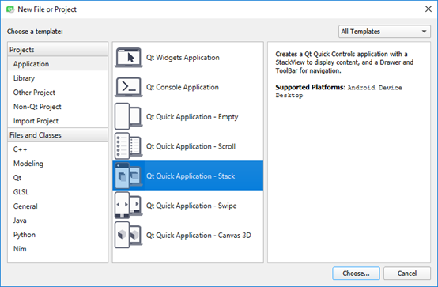

Creating Qt Quick Projects

When you create a new Qt Quick project from scratch, you have the following options:
- Qt Quick Application - Empty creates a Qt Quick 2 application project that can contain both QML and C++ code. You can build the application and deploy it to desktop, embedded, and mobile target platforms.
- Qt Quick Application - Scroll uses the ScrollView type to implement a scrollable list view (requires Qt 5.9 or later).
- Qt Quick Application - Stack uses the StackView type to implement a set of pages with a stack-based navigation model (requires Qt 5.7 or later).
- Qt Quick Application - Swipe uses the SwipeWiew type to implement a set of pages with a swipe-based navigation model (requires Qt 5.7 or later).
- Qt Quick UI Prototype (in the Other Project category) creates a Qt Quick UI project with a single QML file that contains the main view. You can review Qt Quick 2 UI projects in the QML Scene preview tool. You do not need to build them, because they do not contain any C++ code. Use this only if you are prototyping. You cannot create a full application with this.
Qt Quick UI projects cannot be deployed to embedded or mobile target platforms. For those platforms, create a Qt Quick application instead.
- Qt Quick 2 Extension Plugin (in the Library category) create C++ plugins that make it possible to offer extensions that can be loaded dynamically into Qt Quick 2 applications.
Note: The SDK for a particular target platform might install additional templates for that platform. For example, the QNX templates are installed as part of the QNX SDK.
Qt Creator creates the necessary boilerplate files. Some of the files are specific to a particular target platform.
Creating Empty Qt Quick Applications
- Select File > New File or Project > Application > Qt Quick Application - Empty > Choose.
- In the Name field, enter a name for the application.
- In the Create in field, enter the path for the project files, and then select Next (or Continue on macOS).
- In the Build system field, select the build system to use for building and running the project: qmake, CMake, or Qbs.
- Select Next.
- Select the Qt version to develop with in the Minimal required Qt version field. The Qt version determines the Qt Quick imports that are used in the QML files.
- Select the Use Qt Virtual Keyboard check box to add support for Qt Virtual Keyboard to the application.
Note: If you have not installed the Qt Virtual Keyboard module when you installed Qt, an error message will appear when you try to open the main.qml in the Form Editor in the Design mode. You can use the Qt Maintenance Tool to install Qt Virtual Keyboard.
- Select Next.
- Select kits for running and building your project, and then click Next.
Note: Kits are listed if they have been specified in Tools > Options > Kits.
- Review the project settings, and click Finish (on Windows and Linux) or Done (on macOS) to create the project.
Qt Creator generates a QML file, main.qml, that you can modify in the Design mode.
Creating Qt Quick Controls Applications
- Select File > New File or Project > Application > Qt Quick Application - Scroll, Qt Quick Application - Stack, or Qt Quick Application - Swipe > Choose.
- In the Name field, enter a name for the application.
- In the Create in field, enter the path for the project files, and then select Next (or Continue on macOS).
- In the Build system field, select the build system to use for building and running the project: qmake, CMake, or Qbs.
- In the Qt Quick Controls Style field, select one of the predefined UI styles to use, and then select Next.
- Select the Use Qt Virtual Keyboard check box to add support for Qt Virtual Keyboard to the application.
- Select kits for the platforms that you want to build the application for. To build applications for mobile devices, select kits for Android ARM and iPhone OS, and click Next.
Note: Kits are listed if they have been specified in Tools > Options > Kits (on Windows and Linux) or in Qt Creator > Preferences > Kits (on macOS).
- Select Next.
- Review the project settings, and click Finish (or Done on macOS).
For the Scroll application, Qt Creator creates a QML file, main.qml, that you can modify in the Design mode.
For the Stack and Swipe applications, Qt Creator generates two UI files, Page1Form.ui.qml and Page2Form.ui.qml, that you can modify in the Form Editor and a QML file, main.qml, that you can modify in the Text Editor to add the application logic.
Creating Qt Quick UI Projects
Qt Quick UI projects are useful for testing or prototyping user interfaces, or for setting up a separate project just for QML editing, for example. You cannot use them for application development, because they do not contain:
- C++ code
- Resource files (.qrc)
- Code needed for deploying applications to devices
To create a Qt Quick UI project:
- Select File > New File or Project > Other Project > Qt Quick UI Prototype > Choose.
- In the Minimal required Qt version field, select the Qt version to develop with. The Qt version determines the Qt Quick imports that are used in the QML files.
You can add imports later to combine Qt Quick basic types with Qt Quick Controls, Qt Quick Dialogs, and Qt Quick Layouts (available since Qt 5.1).
- Select the Use Qt Virtual Keyboard check box to add support for Qt Virtual Keyboard to the application.
- Select Next (or Continue on macOS).
- Review the project settings, and click Finish (on Windows and Linux) or Done (on macOS) to create the project.
Qt Creator creates the following files:
- .qmlproject project file defines that all QML, JavaScript, and image files in the project folder belong to the project. Therefore, you do not need to individually list all the files in the project.
- .qml file defines an UI item, such as a component or the whole application UI.
- ui.qml file defines a form for the application UI. This file is created if you selected the With .ui.qml file check box.
To use JavaScript and image files in the application, copy them to the project folder.